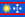
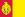
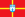
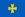
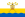
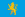
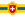
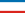

3. 地理
行政区分
州地図

| No. | 特別市 | 総人口 | 民族構成 | ||
|---|---|---|---|---|---|
| 1 | キエフ（首都） | 2,611,300人 |
ウクライナ人：2,110,800人 (82.2%) ロシア人：337,300人 (13.1%) ユダヤ人：17,900人 (0.7%) ベラルーシ人：16,500人 (0.6%) ポーランド人：6,900人 (0.3%) アルメニア人：4,900人 (0.2%) |
||
| 2 | セヴァストポリ | 379,500人 |
ウクライナ人：270,000人 (71.6%) ロシア人：84,400人 (22.4%) ベラルーシ人：5,800人 (1.6%) タタール人：2.500人 (0.7%) クリミア・タタール人：1,800人人 (0.5%) アルメニア人：1,300人 (0.3%) ユダヤ人：1,000人 (0.3%) モルドヴァ人：800人 (0.2%) アゼルバイジャン人：600人 (0.2%) |
||
| No. | 州旗 | 州名 | 州庁所在地 | 総人口 | 民族構成 |
| 1 | イヴァーノ＝フランキーウシク州 | イヴァーノ＝フランキーウシク | 1,409,800人 |
ウクライナ人：1371,200人 (97.5%) ロシア人：24,900人 (1.8%) |
|
| 2 |  | ヴィーンヌィツャ州 | ヴィーンヌィツャ | 1,772,400人 |
ウクライナ人：1,674,100人 (94.9%) ロシア人：67,500人 (3.8%) ポーランド人：3,700人 (0.2%) ベラルーシ人：3,100人 (0.2%) ユダヤ人：3,000人 (0.2%) モルドヴァ人：2,900人 (0.2%) |
| 3 | ヴォルィーニ州 | ルーツィク | 1,060,700人 |
ウクライナ人：1,025,000人 (96.9%) ロシア人：25,100人 (2.1%) ベラルーシ人：3,200人 (0.3%) |
|
| 4 | オデッサ州 | オデッサ | 2,469,000人 |
ウクライナ人：1,542,300人 (62.8%) ロシア人：508,500人 (20.7%) ブルガリア人：150,600人 (6.1%) モルドヴァ人：123,700人 (5.0%) ガガウズ人：27,600人 (1.1%) ユダヤ人：13,300人 (0.5%) ベラルーシ人：12,700人 (0.5%) アルメニア人：7,400人 (0.3%) ロマ人：4,000人 (0.2%) |
|
| 5 | キエフ州 | キエフ | 1,827,900人 |
ウクライナ人：1,684,800人 (92.5%) ロシア人：109,300人 (6.0%) ベラルーシ人：8,600人 (0.5%) ポーランド人：2,800人 (0.2%) |
|
| 6 |  | キロヴォフラード州 | クロプィウヌィーツィクィイ | 1,133,100人 |
ウクライナ人：1,014,600人 (90.1%) ロシア人：83,900人 (7.5%) ポーランド人：8,200人 (0.7%) ベラルーシ人：5,500人 (0.5%) アルメニア人：2,900人 (0.3%) ブルガリア人：2,200人 (0.2%) |
| 7 | ザカルパッチャ州 | ウージュホロド | 1,258,300人 |
ウクライナ人：1010,100人 (80.5%) ハンガリー人：151,500人 (12.1%) ルーマニア人：32,100人 (2.6%) ロシア人：31,000人 (2.5%) ロマ人：14,000人 (1.1%) スロバキア人：5,600人 (0.5%) ドイツ人：3,500人 (0.3%) |
|
| 8 | ザポリージャ州 | ザポリージャ | 1,929,200人 |
ウクライナ人：1,364,100人 (70.8%) ロシア人：476,800人 (24.7%) ブルガリア人：27,700人 (1.4%) ベラルーシ人：12,600人 (0.7%) アルメニア人：6,400人 (0.3%) ユダヤ人：4,300人 (0.2%) ドイツ人：3,500人 (0.3%) グルジア人：3,800人 (0.2%) |
|
| 9 |  | ジトーミル州 | ジトーミル | 1,389,500人 |
ウクライナ人：1,255,000人 (90.3%) ロシア人：68,900人 (5.0%) ポーランド人：4,900人 (0.4%) ベラルーシ人：4,900人 (0.4%) ユダヤ人：2,600人 (0.2%) |
| 10 | スームィ州 | スームィ | 1,299,700人 |
ウクライナ人：1,152,000人 (88.8%) ロシア人：121,700人 (9.4%) ポーランド人：4,300人 (0.3%) |
|
| 11 | チェルカースィ州 | チェルカースィ | 1,402,900人 |
ウクライナ人：1,301,200人 (93.1%) ロシア人：75,600人 (5.4%) ポーランド人：3,900人 (0.3%) |
|
| 12 | チェルニーヒウ州 | チェルニーヒウ | 1,245,300人 |
ウクライナ人：1,155,400人 (93.5%) ロシア人：62,200人 (5.0%) ポーランド人：7,100人 (0.6%) |
|
| 13 | チェルニウツィー州 | チェルニウツィー | 922,800人 |
ウクライナ人：689,100人 (75.0%) ルーマニア人：114,600人 (12.5%)) モルドヴァ人：67,200人 (7.3%) ロシア人：37,900人 (4.1%) ポーランド人：3,300人 (0.4%) ベラルーシ人：1,400人 (0.2%) ユダヤ人：1,400人 (0.2%) |
|
| 14 | テルノーピリ州 | テルノーピリ | 1,142,400人 |
ウクライナ人：1,113,500人 (97.8%) ロシア人：14,200人 (1.2%) ポーランド人：3,800人 (0.3%) |
|
| 15 | ドニプロペトロウシク州 | ドニプロ | 3,567,600人 |
ウクライナ人：2,825,800人 (79.3%) ロシア人：627,500人 (17.6%) ベラルーシ人：29,500人 (0.8%) ユダヤ人：13,700人 (0.4%) アルメニア人：10,600人 (0.3%) アゼルバイジャン人：5,600人 (0.2%) |
|
| 16 | ドネツィク州 | ドネツィク | 4,841,100人 |
ウクライナ人：2,744,100人 (56.9%) ロシア人：1,844,400人 (38.2%) ギリシャ人：77,500人 (1.6%) ベラルーシ人：44,500人 (0.9%) タタール人：19,100人 (0.4%) アルメニア人：15,700人 (0.3%) ユダヤ人：8,000人 (0.2%) アゼルバイジャン人：8,000人 (0.2%) |
|
| 17 | ハルキウ州 | ハルキウ | 2,914,200人 |
ウクライナ人：2,048,700人 (70.7%) ロシア人：742,000人 (25.6%) ベラルーシ人：14,700人 (0.5%) ユダヤ人：11,500人 (0.4%) アルメニア人：11,100人 (0.4%) アゼルバイジャン人：5,600人 (0.2%) グルジア人：4,400人 (0.2%) |
|
| 18 | フメリニツキー州 | フメリニツキー | 1,430,800人 |
ウクライナ人：1,339,300人 (93.9%) ロシア人：50,700人 (3.6%) ユダヤ人：23,000人 (1.6%) ベラルーシ人：2,700人 (0.2%) |
|
| 19 | ヘルソン州 | ヘルソン | 1,175,100人 | 不明 | |
| 20 |  | ポルタヴァ州 | ポルタヴァ | 1,175,100人 | 不明 |
| 21 |  | ムィコラーイウ州 | ムィコラーイウ | 1,264,700人 | 不明 |
| 22 |  | リヴィウ州 | リヴィウ | 2,626,500人 | 不明 |
| 23 |  | リウネ州 | リウネ | 1,173,300人 | 不明 |
| 24 | ルハーンシク州 | ルハーンシク | 2,546,200人 | 不明 | |
| No. | 共和国旗 | 自治共和国 | 共和国首都 | 総人口 | 民族構成 |
| 1 |  | クリミア自治共和国 | シンフェロポリ | 2,033,700人 |
ウクライナ人：1,880,400人 (56.9%) ロシア人：492,200人 (24.3%) クリミア・タタール人：243,400人 (12.0%) ベラルーシ人：29,200人 (1.4%) タタール人：11,000人 (0.5%) アルメニア人：8700人 (0.4%) ユダヤ人：4500人 (0.2%) ポーランド人：3800人 (0.2%) モルドヴァ人：3700人 (0.2%) アゼルバイジャン人：3700人 (0.2%) |